a personal collection of
EN- ARCHIVE
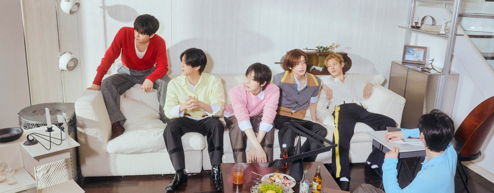
The Eras.
An evolving story, told through music.
Every era marks a new chapter in ENHYPEN's artistic journey. From their earliest releases to their evolving musical identity, each comeback introduces distinct sounds, visual concepts, and narratives that contribute to the group's creative evolution.
The Eras presents a chronological collection of ENHYPEN's Korean and Japanese releases, exploring the concepts behind each album, the stories expressed through their title tracks, and the performances that bring each chapter to life.
Explore the chapters that define their journey.
BORDER : DAY ONE

Crossing the Border.
BORDER : DAY ONE introduces a concept centered on new beginnings, transformation, and the transition between two worlds. The album explores the uncertainty and anticipation of entering an unfamiliar reality, using the idea of crossing a border to represent the beginning of a new identity and journey.
Through its contrasting visual concepts, DAWN and DUSK, the album reflects the relationship between light and darkness, hope and uncertainty. Its mysterious atmosphere and symbolic imagery establish the foundation for ENHYPEN's evolving conceptual storytelling.
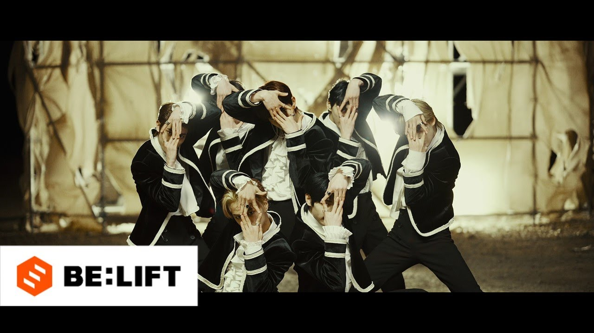
Between Destiny and Choice.
Given-Taken explores the relationship between fate and individual choice, questioning whether one's path is determined by circumstances or shaped through personal determination. The song introduces themes of uncertainty, identity, and the search for belonging.
Its music video develops these ideas through gothic-inspired settings, dramatic lighting, and supernatural symbolism. The contrast between innocence and darkness creates a mysterious visual atmosphere, introducing the cinematic storytelling and recurring motifs that would become central to ENHYPEN's artistic identity.
Performance Stages
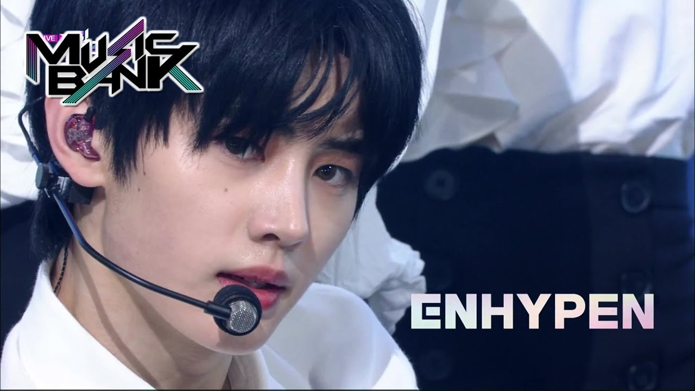
Given-Taken / Title Stage
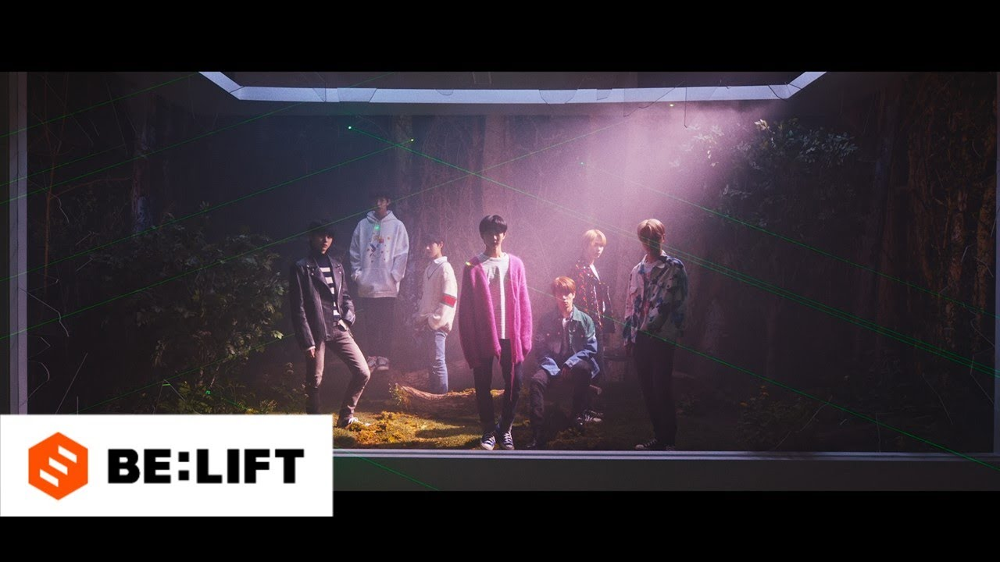
Let Me In (20 CUBE) / B-Side MV
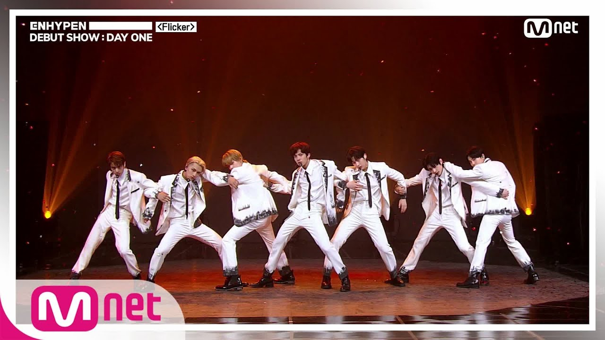
Flicker / B-Side Stage
BORDER : CARNIVAL

Entering the Carnival.
BORDER : CARNIVAL continues the journey established in BORDER : DAY ONE, exploring the excitement and confusion of entering a new world after crossing the border. The album presents this unfamiliar reality as a magnificent carnival, where celebration and uncertainty coexist, reflecting the overwhelming experiences and emotions that follow a new beginning.
Through its three visual concepts, UP, HYPE, and DOWN, the album captures the shifting emotions of anticipation, exhilaration, and disorientation. Its vibrant yet unsettling imagery contrasts the glamour of celebration with the instability beneath it, expanding ENHYPEN's conceptual narrative into a world where familiar boundaries no longer apply.
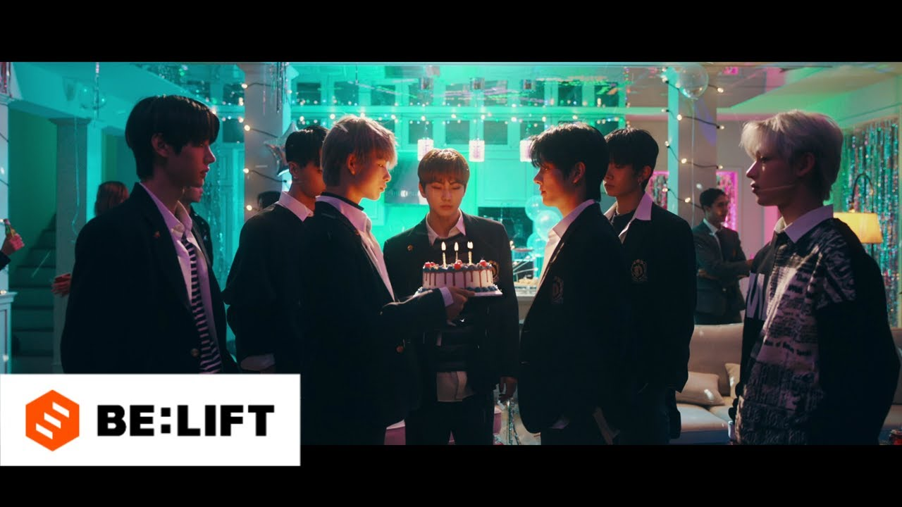
Lost in the Celebration.
Drunk-Dazed explores the overwhelming sensation of being drawn into an unfamiliar world, where excitement gradually becomes indistinguishable from confusion. The song portrays the intoxicating experience of sudden attention and celebration, capturing the tension between enjoying the moment and losing control within it.
Its music video develops this concept through a mysterious carnival atmosphere, combining extravagant parties, gothic imagery, and supernatural symbolism. Rapid transitions, dramatic lighting, and recurring vampire motifs create a sense of exhilaration and unease, reinforcing the contrast between the carnival's dazzling appearance and the darker reality beneath its surface.
Performance Stages
BORDER : 儚い (HAKANAI)

Beyond the First Border.
BORDER : 儚い (HAKANAI) marks ENHYPEN's Japanese debut, extending the narrative introduced in BORDER : DAY ONE to a new audience. The title, meaning "fleeting" or "ephemeral," reflects the delicate nature of beginnings and the uncertainty that accompanies change.
Alongside Japanese versions of Given-Taken and Let Me In (20 CUBE), the single introduces Forget Me Not, ENHYPEN's first original Japanese song. Its brighter, more uplifting sound explores the determination to move forward despite uncertainty, presenting a refreshing contrast to the darker atmosphere of their earlier releases.
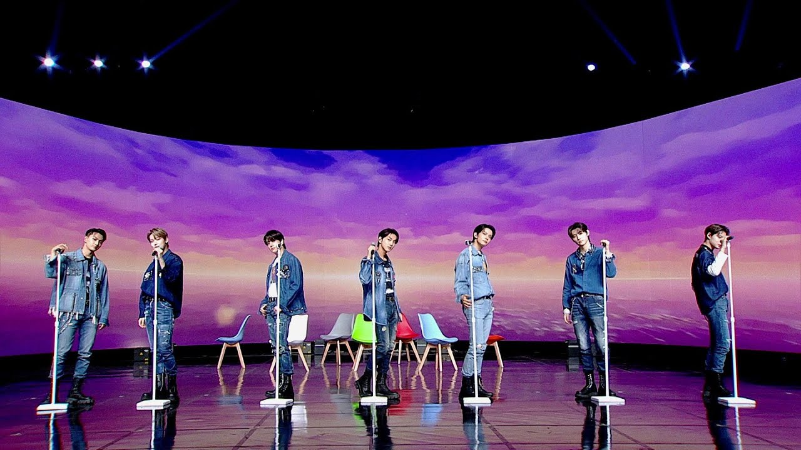
Moving Toward Tomorrow.
Forget Me Not explores the determination to overcome personal challenges and move toward an uncertain future. Through themes of perseverance, hope, and self-discovery, the song captures the emotions of youth as a period of continuous growth and change.
Featuring energetic electric guitar sounds and an uplifting melody, the song creates a refreshing atmosphere that reflects the optimism and uncertainty of new beginnings. As the opening theme for the Japanese anime RE-MAIN, it complements the story's focus on overcoming setbacks, rediscovering one's purpose, and finding the courage to begin again.
Performance Stages
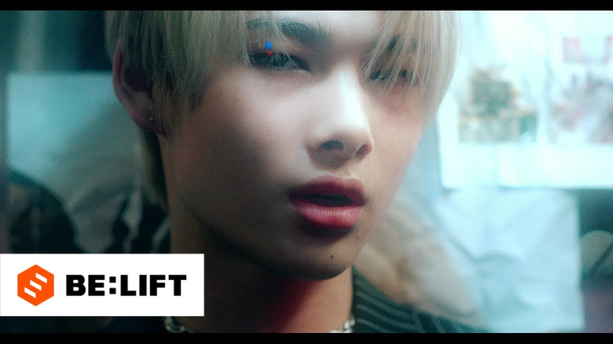
Given-Taken(Japanese Ver.) / MV
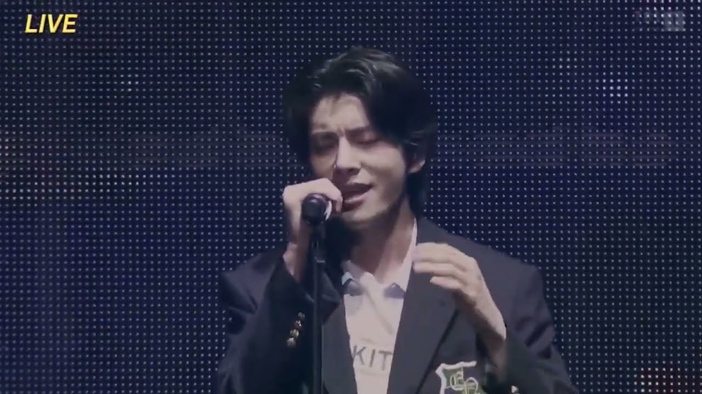
Forget Me Not / Concert Stage
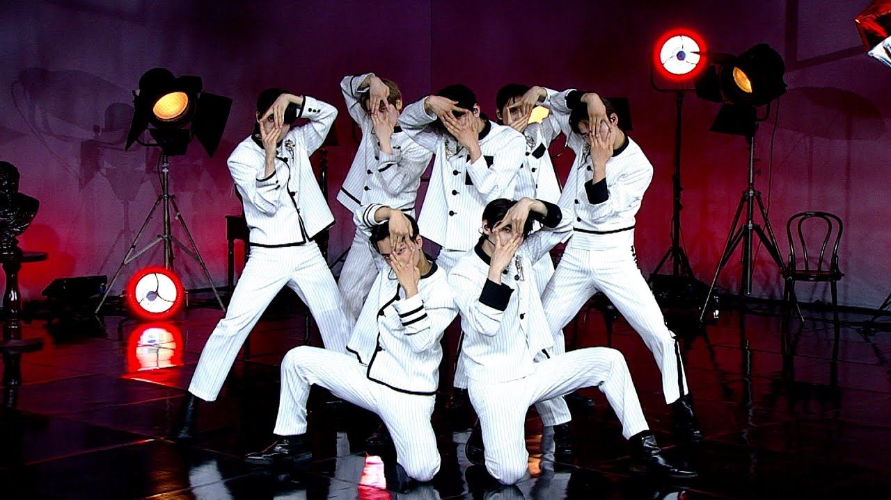
Given-Taken(Japanese Ver.) / Japanese Ver. Stage
DIMENSION : DILEMMA

Between Desire and Dilemma.
DIMENSION : DILEMMA marks the beginning of a new chapter in ENHYPEN's narrative, exploring the complexities of identity, desire, and choice. Having crossed the border into an unfamiliar world, the members encounter conflicting values and expectations, discovering that growing up involves navigating uncertainty and making difficult decisions.
Through its three visual concepts, SCYLLA, CHARYBDIS, and ODYSSEUS, the album portrays the contrasting experiences of youth, from external pressures and inner conflict to the search for personal freedom. Drawing inspiration from Greek mythology, its imagery reflects the challenges of choosing one's path in a world filled with competing possibilities.
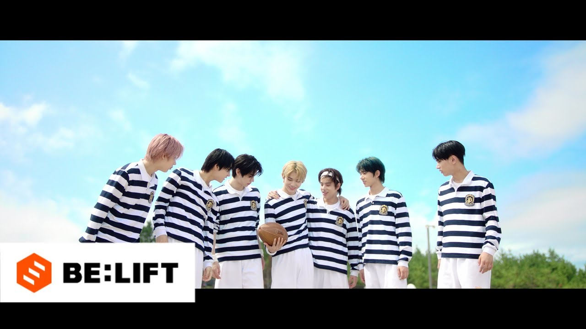
The Freedom to Run.
Tamed-Dashed explores the conflict between following one's desires and accepting the expectations imposed by the world. The song questions whether to surrender to uncertainty or move forward despite the possibility of failure, capturing the impulsive determination and emotional contradictions of youth.
Its music video introduces a brighter, more energetic visual direction through sunlit beaches, school settings, and rugby-inspired imagery. Contrasting these scenes with mysterious transitions and supernatural elements, the video connects the freedom of youth with ENHYPEN's continuing narrative of identity and transformation, presenting running as a symbol of choosing one's own direction.
Performance Stages
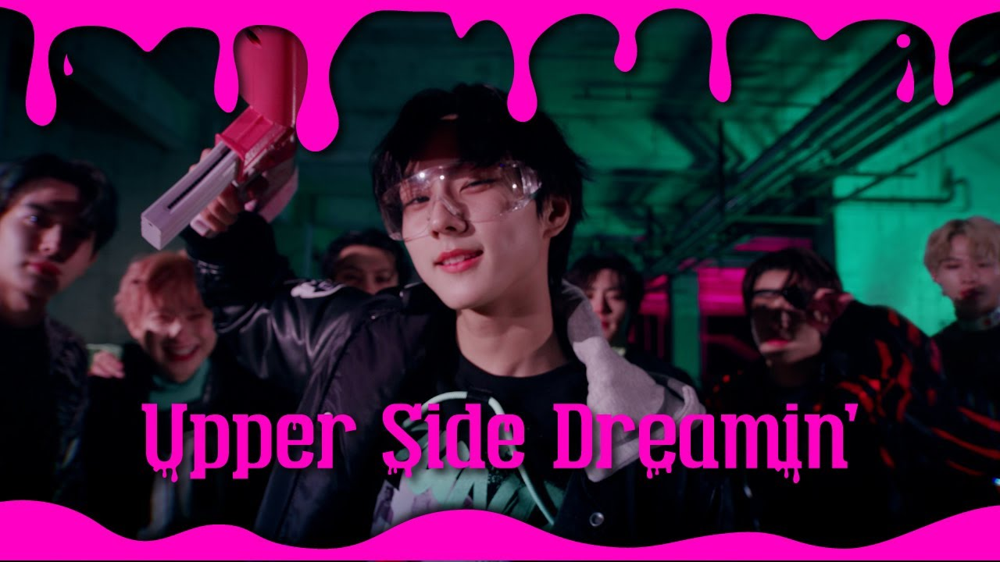
Upper Side Dreamin’ / B-Side Special Performance
DIMENSION : ANSWER
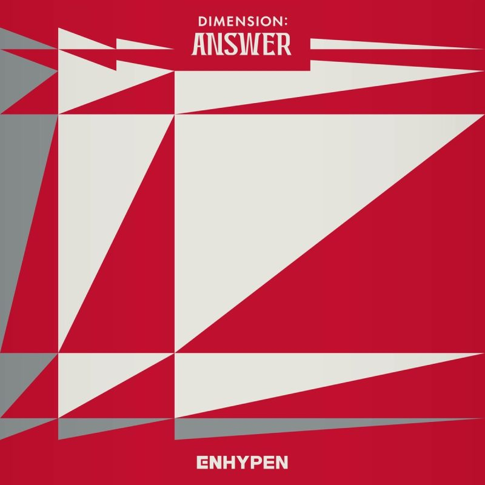
Rejecting the Answer.
DIMENSION : ANSWER continues the exploration of identity and uncertainty introduced in DIMENSION : DILEMMA, shifting from questioning the world to challenging the expectations it imposes. Rather than accepting the answers provided by society, ENHYPEN begins to recognize the importance of defining their own values and choosing their own direction.
Through its two visual concepts, NO and YET, the album explores rebellion, independence, and the determination to live beyond established rules. Featuring three new tracks, Blessed-Cursed, Polaroid Love, and Outro : Day 2, the repackage marks a turning point in ENHYPEN's narrative, transforming uncertainty into a declaration of self-determination.
Breaking Free from Expectations.
Blessed-Cursed explores the realization that what initially appeared to be a blessing may instead be a form of restriction. Rejecting the expectations and identities imposed upon them, the song expresses the determination to reclaim personal freedom and pursue a future shaped by individual choice.
Its music video draws inspiration from the late 1990s and early 2000s, incorporating Y2K aesthetics, bold fashion, and dynamic visual transitions. Combined with the song's powerful rock and hip-hop influences, these elements create a rebellious atmosphere that reflects ENHYPEN's growing confidence and refusal to follow a predetermined path.
Performance Stages
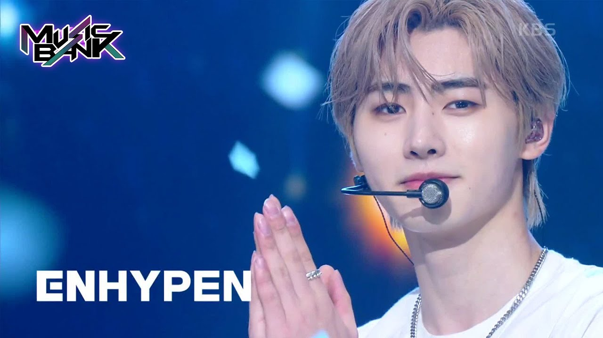
Blessed-Cursed / Title Stage
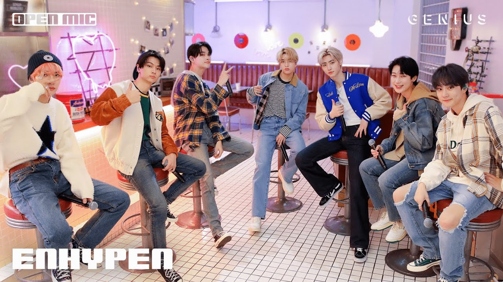
Polaroid Love / B-Side Stage
DIMENSION : 閃光 SENKOU

A Flash of Youth.
DIMENSION : 閃光 (SENKOU), meaning "flash of light," marks ENHYPEN's second Japanese single, continuing their exploration of youth, identity, and the challenges of navigating an unfamiliar world. The release brings together Japanese versions of Tamed-Dashed and Drunk-Dazed alongside Always, their second original Japanese song.
Connecting the emotional conflicts of the DIMENSION era with a more hopeful perspective, the single explores the contrast between uncertainty and determination. While its returning tracks reflect the confusion and intensity of growing up, Always introduces a reassuring message of perseverance and self-belief, highlighting another dimension of ENHYPEN's musical identity.
Strength in Every Moment.
Always delivers an uplifting message of encouragement to those facing uncertainty, pressure, and unexpected challenges. The song emphasizes the importance of believing in oneself and continuing forward, even when the future feels unpredictable.
Featuring bright pop melodies, an energetic rhythm, and warm vocal harmonies, Always offers a comforting contrast to the intensity of the single's other tracks. Originally released as the theme song for the Japanese drama Muchaburi! I Am the President, it highlights ENHYPEN's ability to express hope, reassurance, and emotional support through music.
Performance Stages
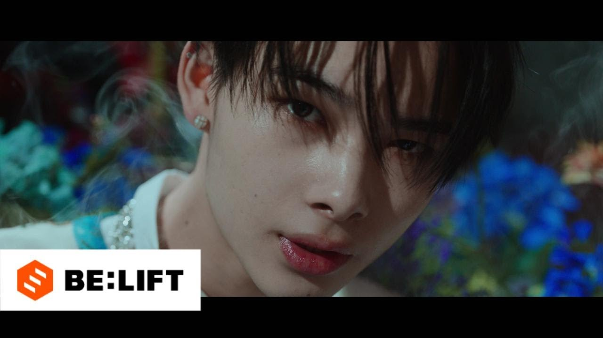
Tamed-Dashed(Japanese Ver.) / MV
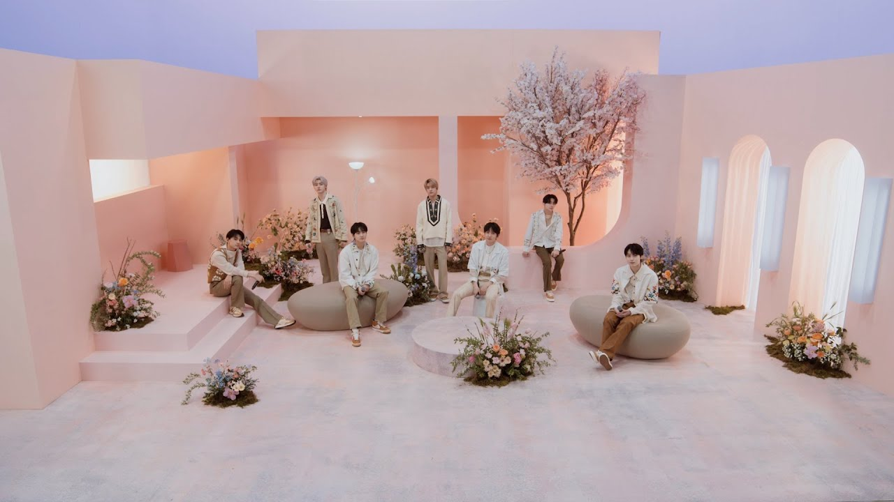
Always / B-Side Stage
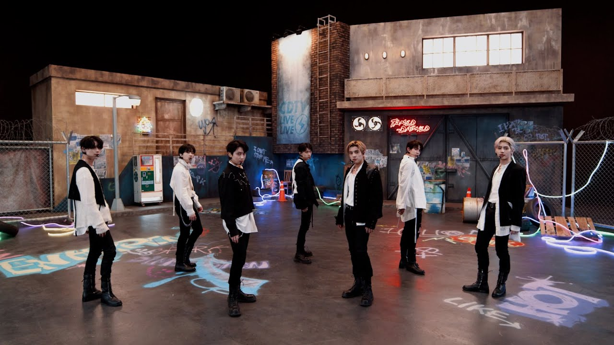
Tamed-Dashed(Japanese Ver.) / Japanese Ver. Stage
MANIFESTO : DAY 1

A Declaration of Independence.
MANIFESTO : DAY 1 marks a turning point in ENHYPEN's narrative, shifting from the uncertainty of the BORDER and DIMENSION eras toward a confident declaration of independence. Having confronted the complexities of identity, desire, and societal expectations, the group begins to take control of its own future, rejecting predetermined paths and embracing the freedom to define its own direction.
Through its three visual concepts, D, J, and M, the album explores rebellion, self-expression, and the determination to challenge established boundaries. Moving away from the mysterious fantasy imagery of earlier releases, its bold styling and rebellious atmosphere reflect a more direct and assertive artistic identity, presenting a new beginning shaped by personal conviction.
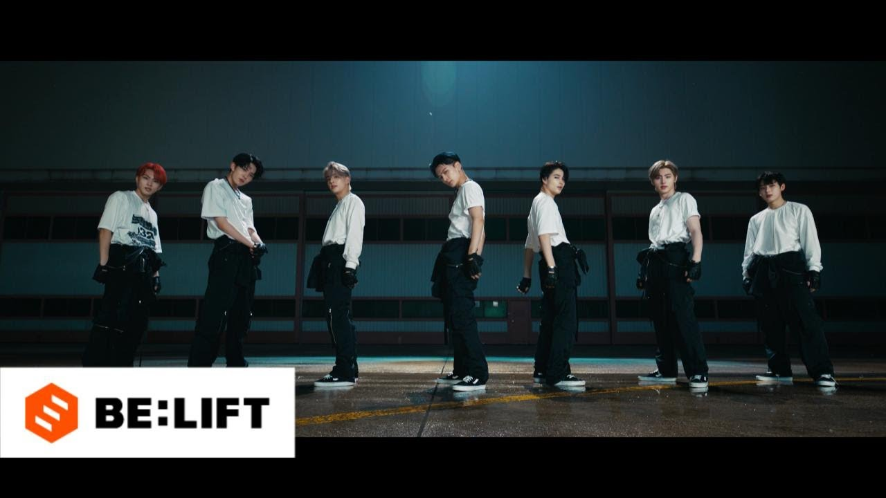
Taking Control of Tomorrow.
Future Perfect (Pass the MIC) expresses the determination to break free from society's expectations and create a future through individual choice. Rather than following a path established by others, the song emphasizes independence, ambition, and the importance of encouraging one's generation to move forward together.
Built around powerful Chicago drill influences, the track introduces an aggressive hip-hop sound that distinguishes it from ENHYPEN's earlier releases. Its music video reinforces this rebellious energy through urban settings, bold visual contrasts, and intense choreography, presenting the microphone as a symbol of empowerment and the desire to give others a voice.
Performance Stages
定め(SADAME)

Defining Their Own Destiny.
定め (SADAME), meaning "fate" or "destiny," marks ENHYPEN's first Japanese studio album, bringing together the musical narratives established throughout their BORDER, DIMENSION, and MANIFESTO eras. The album revisits themes of identity, transformation, and self-determination, reflecting the group's evolving relationship with the idea of destiny.
Featuring Japanese versions of previously released Korean tracks alongside original Japanese songs, the album connects different stages of ENHYPEN's artistic journey. Its newest original track, Make the change, introduces a message of personal growth and determination, emphasizing the courage to embrace change and move toward a future shaped by one's own decisions.
The Courage to Change.
Make the change explores the determination to overcome uncertainty and take meaningful steps toward personal transformation. Centered on themes of resilience, self-belief, and new beginnings, the song encourages listeners to embrace unfamiliar possibilities rather than remain confined by fear or expectations.
Through its bright pop sound, energetic rhythm, and uplifting melodies, the track creates an optimistic atmosphere that contrasts with the darker intensity of ENHYPEN's earlier releases. Selected as the theme song for the Japanese drama Saikou no Obahan Nakajima Haruko Season 2, it reinforces the importance of taking initiative and finding the confidence to create positive change.
Performance Stages
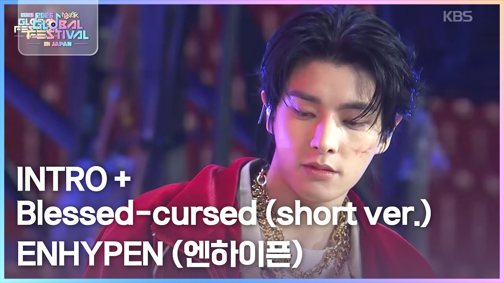
Blessed-Cursed / Special Stage in Japan
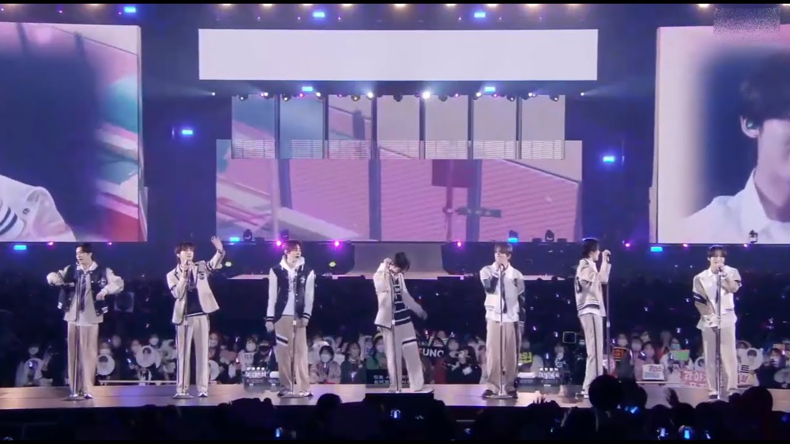
Make the Change / Concert Stage
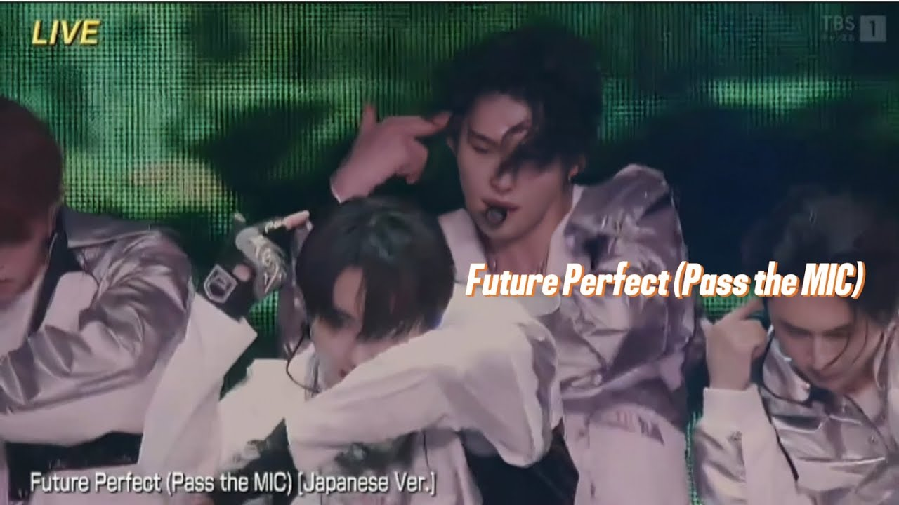
Future Perfect (Pass the MIC) Japanese Ver./ Concert Stage
DARK BLOOD

Bound by Blood.
DARK BLOOD marks ENHYPEN's return to their signature vampire-inspired narrative, introducing a darker exploration of fate, connection, and sacrifice. Beginning the BLOOD series, the album presents blood as a symbol of an unbreakable bond between two individuals, exploring the desire to protect someone even at the cost of one's own existence.
Through its three visual concepts, FULL, HALF, and NEW, the album develops a gothic fantasy atmosphere shaped by longing, temptation, and transformation. Its cinematic storytelling follows a character who loses sight of a destined connection through arrogance, only to rediscover it through sacrifice. Combining supernatural imagery with deeply human emotions, DARK BLOOD establishes a new chapter in ENHYPEN's artistic identity.
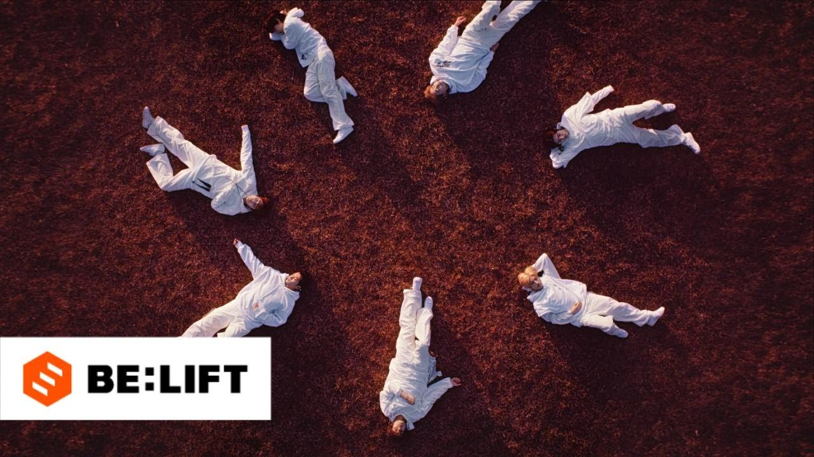
An Eternal Connection.
Bite Me explores the desire to reunite with someone connected by fate, presenting love as an irresistible force that transcends time and separation. Through its vampire-inspired symbolism, the song portrays the act of being bitten as a declaration of devotion, representing the willingness to surrender oneself in order to restore a lost connection.
Its music video develops this narrative through gothic architecture, dramatic lighting, and elegant choreography, creating an atmosphere of mystery and forbidden romance. The contrast between restrained verses and an intense chorus reinforces the tension between desire and sacrifice, while the song's dark pop sound introduces a more mature and theatrical dimension to ENHYPEN's musical identity.
Performance Stages
結 -YOU-

The Bonds That Connect Us.
結 -YOU- marks ENHYPEN's third Japanese single, continuing the exploration of fate, love, and connection introduced in DARK BLOOD. The title, featuring the Japanese character 結 meaning "to tie" or "to connect," reflects the emotional bonds that bring individuals together and the significance of relationships that endure through uncertainty.
Featuring Japanese versions of Bite Me and Bills alongside the original Japanese song BLOSSOM, the single explores different expressions of love, from intense longing and separation to warmth and devotion. While its returning tracks preserve the darker atmosphere of the BLOOD era, BLOSSOM introduces a softer perspective, emphasizing the beauty of meaningful connections.
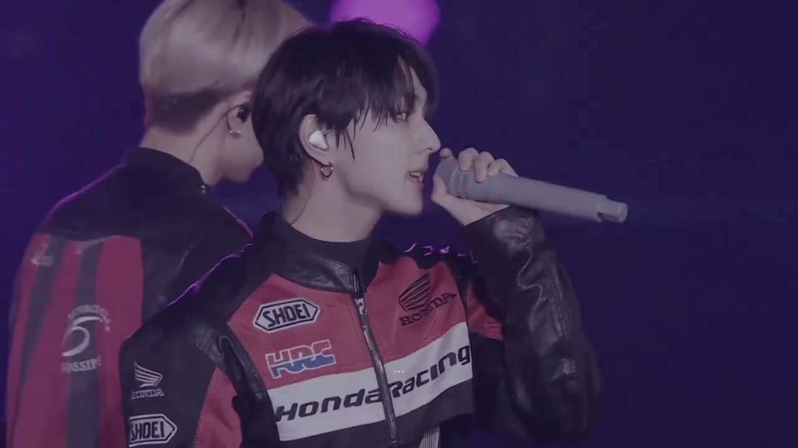
A Love That Continues to Bloom.
BLOSSOM explores the warmth and sincerity of loving someone, comparing the growth of affection to a flower gradually coming into bloom. The song expresses gratitude for a meaningful connection and the desire to preserve it, portraying love as a source of comfort, hope, and emotional strength.
As ENHYPEN's first original Japanese ballad, BLOSSOM introduces a gentle J-pop sound characterized by delicate melodies, expressive vocals, and warm harmonies. Its intimate atmosphere contrasts with the dramatic intensity of Bite Me, offering a more vulnerable expression of devotion while continuing the group's exploration of relationships that transcend distance and uncertainty.
Performance Stages
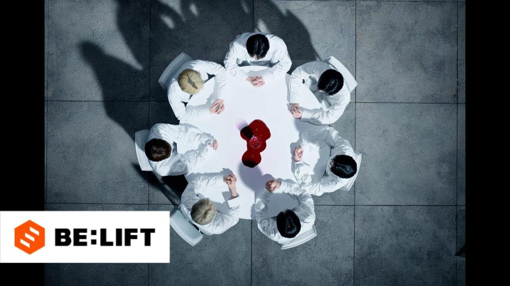
Bite Me Japanese Ver. / MV
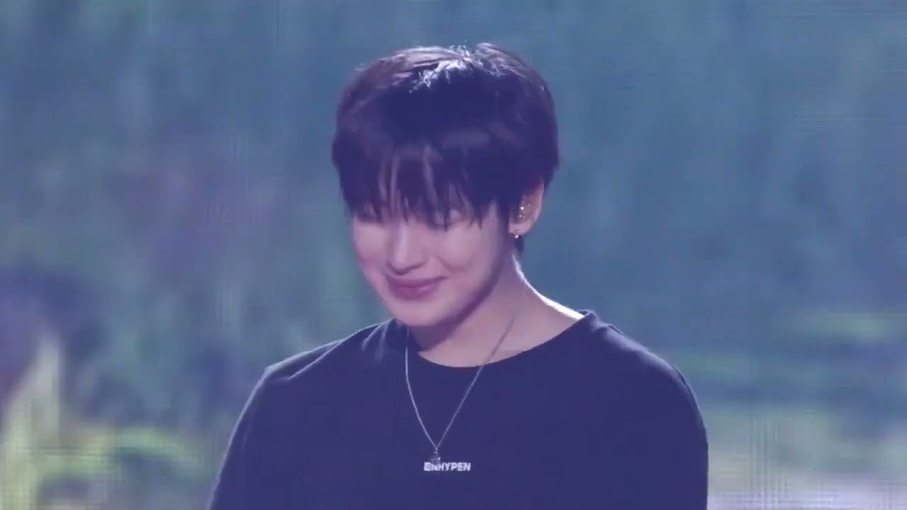
BLOSSOM / Concert Stage
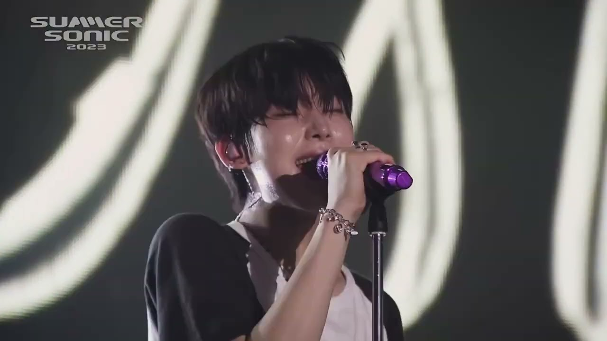
Bite Me / Special Stage in Japan
ORANGE BLOOD

Love Beyond Eternity.
ORANGE BLOOD continues the vampire-inspired narrative introduced in DARK BLOOD, shifting its focus from eternal devotion to the realization that nothing lasts forever. Having sacrificed their immortality for love, the characters confront the fragile nature of existence and embrace the determination to cherish every moment with someone they hold dear.
Through its visual concepts, KSANA and KALPA, the album explores the contrast between fleeting moments and the desire for eternity. Its warm orange tones, dreamlike imagery, and supernatural symbolism reflect a more hopeful perspective on love and mortality. Inspired by the philosophy of carpe diem, ORANGE BLOOD transforms the darkness of its predecessor into a celebration of living and loving without regret.
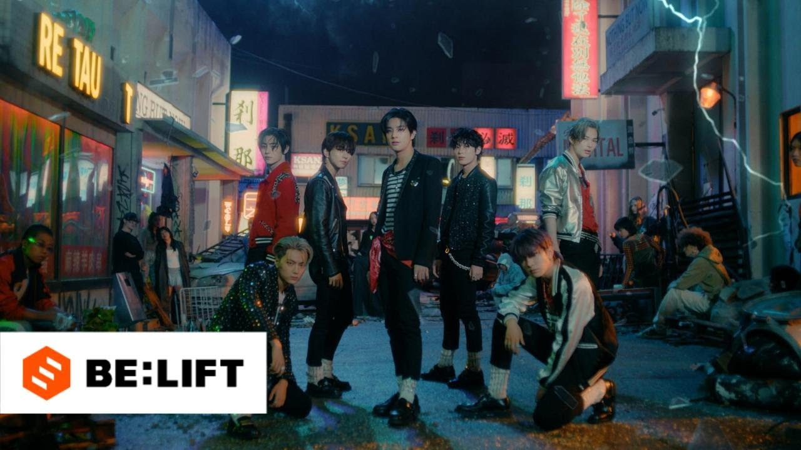
Intoxicated by Love.
Sweet Venom explores the irresistible attraction of a love that remains powerful even when it brings pain and danger. Continuing the narrative of Bite Me, the song portrays devotion as an intoxicating force, expressing the willingness to endure suffering rather than abandon a meaningful connection.
Blending funk-inspired rhythms, groovy basslines, and an infectious pop melody, the track introduces a brighter musical direction while preserving ENHYPEN's signature supernatural themes. Its music video combines vibrant colors, surreal imagery, and dynamic choreography, creating a playful yet mysterious atmosphere that reflects the tension between pleasure and danger.
Performance Stages
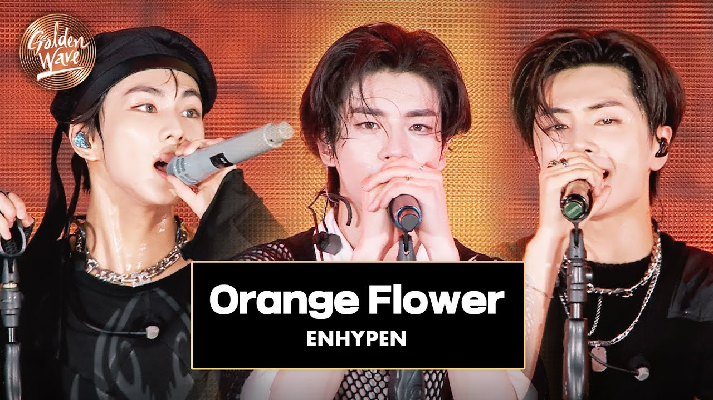
Orange Flower(You Complete Me) / B-Side Stage
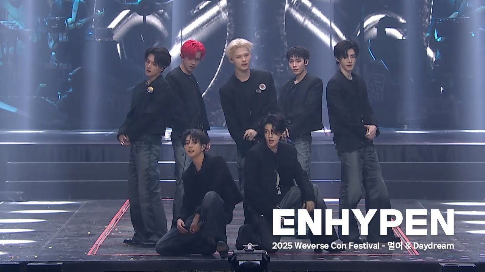
Blind / B-Side Stage
MEMORABILIA

Memories of Immortality.
MEMORABILIA marks a deeper exploration of ENHYPEN's vampire-inspired universe, bringing the supernatural narrative of DARK MOON into a dedicated musical release. Drawing from the webtoon series, the album explores destined love, identity, and the emotional struggles of immortality, presenting the experiences of vampires caught between extraordinary powers and deeply human desires.
Featuring six tracks, including the previously released One In A Billion and Criminal Love, the album connects different chapters of the DARK MOON storyline through music. Its haunting atmosphere, dramatic storytelling, and contrasting musical styles capture the complexities of eternal existence, while the introduction of ENHYPEN's first unit songs, Teeth and Lucifer, offers new perspectives on the characters' inner conflicts.
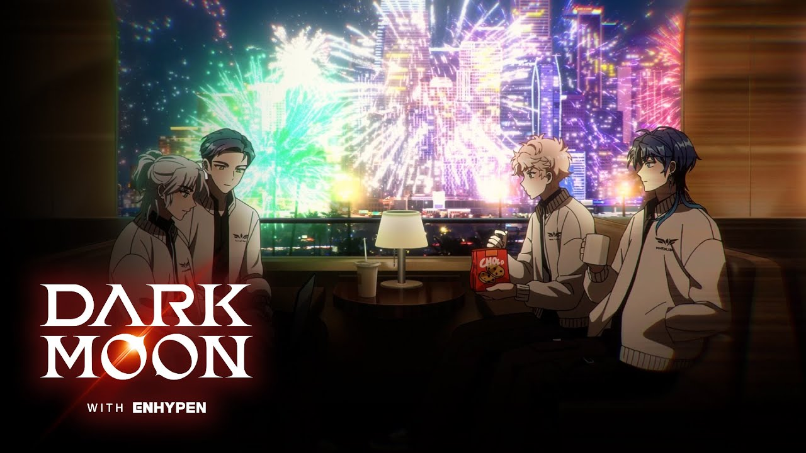
When Familiarity Becomes Uncertainty.
Fatal Trouble explores the emotional confusion of encountering someone who looks identical to a person once believed to be a destined love. As familiar appearances begin to challenge established memories and feelings, the song questions whether love is defined by recognition, fate, or an emotional connection that extends beyond physical identity.
Blending rock ballad influences with dramatic instrumentation and expressive vocals, the track creates an atmosphere of longing and uncertainty. Its animated music video expands the DARK MOON narrative through supernatural imagery, emotional confrontations, and cinematic storytelling, reflecting the characters' struggle to distinguish genuine love from the illusions of destiny.
Performance Stages
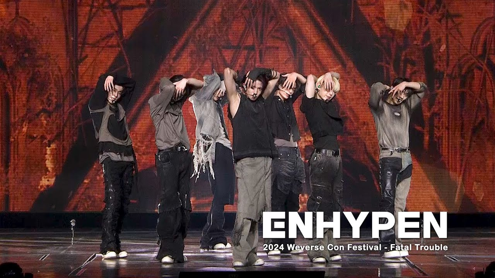
Fatal Trouble / Title Stage
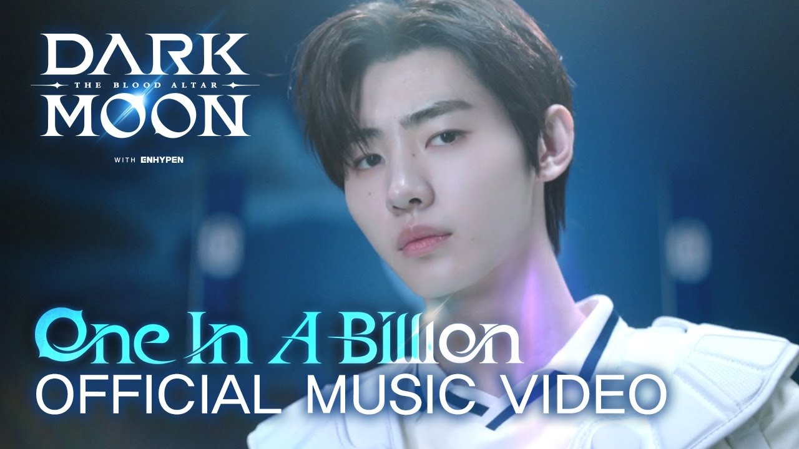
One In A Billion / MV
ROMANCE : UNTOLD
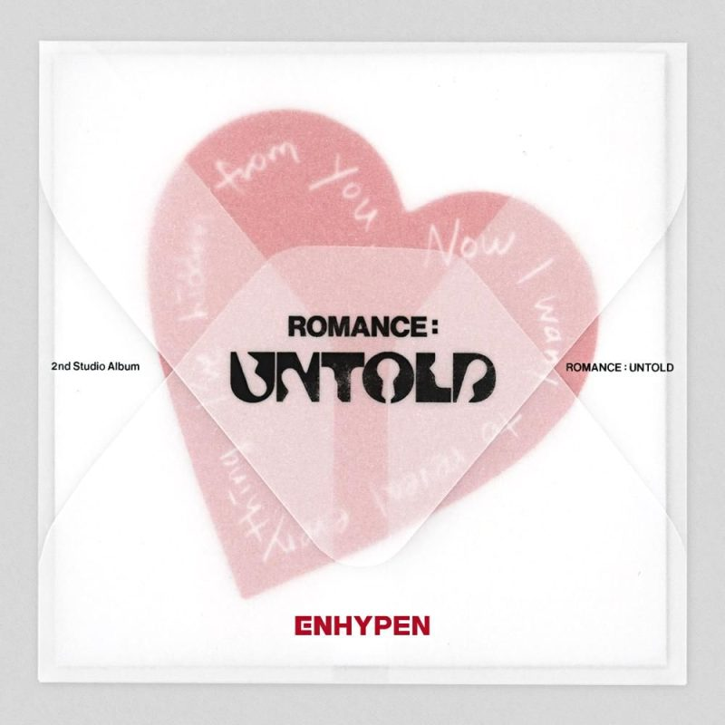
A Romance Beyond Worlds.
ROMANCE : UNTOLD marks the beginning of ENHYPEN's ROMANCE series, introducing a new chapter centered on love, devotion, and the desire to protect a meaningful connection. Moving beyond the themes of mortality and sacrifice explored in the BLOOD series, the album presents a supernatural romance between individuals from different worlds, where love becomes a force capable of overcoming boundaries and transforming one's identity.
Through its three visual concepts, INCEPTIO, ARCANUM, and CONCESSIO, the album explores different dimensions of romance, from the excitement of new beginnings to the secrecy and vulnerability of forbidden love. Its dreamy imagery, cinematic storytelling, and softer musical direction reveal a more intimate side of ENHYPEN's artistic identity, while preserving the fantasy elements that define their evolving narrative.
Only If You Say Yes.
XO (Only If You Say Yes) explores the desire to devote oneself completely to someone special, expressing the willingness to fulfill their wishes and protect their happiness. The song presents love as a promise built on trust and mutual acceptance, emphasizing that even the strongest devotion depends on the other person's choice.
Blending rhythmic pop production, dreamy synthesizers, and an infectious melody, the track introduces a lighter and more romantic musical atmosphere. Its music video combines youthful settings, supernatural imagery, and cinematic storytelling, portraying the excitement and uncertainty of love while continuing ENHYPEN's exploration of relationships that transcend ordinary reality.
Performance Stages
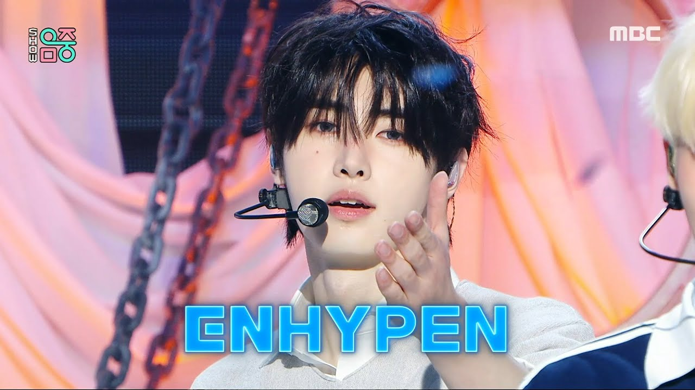
XO (Only If You Say Yes) / Title Stage
ROMANCE : UNTOLD -daydream-
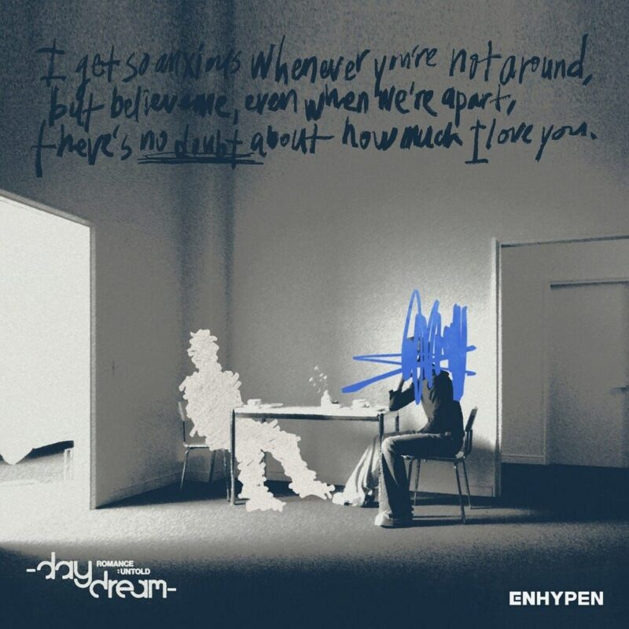
Lost in a Daydream.
ROMANCE : UNTOLD -daydream- expands the romantic narrative introduced in ROMANCE : UNTOLD, exploring the emotional complexities of love through longing, separation, and imagination. While its predecessor focused on the excitement of discovering love, the repackage examines the uncertainty that emerges when two individuals are separated, revealing how absence can intensify affection and deepen emotional attachment.
Through its two visual concepts, BLUE NOON and WHITE MIDNIGHT, the album presents a dreamlike atmosphere where reality and imagination begin to overlap. Featuring two new tracks, Daydream and No Doubt, the release contrasts the anxiety of separation with the growing certainty of love, introducing a more introspective and mysterious dimension to ENHYPEN's romantic storytelling.
Certain in an Uncertain World.
No Doubt explores the growing certainty of love despite physical separation and the challenges of belonging to different worlds. While distance creates feelings of longing and uncertainty, the song emphasizes the realization that genuine affection remains unchanged, transforming emotional vulnerability into a confident declaration of devotion.
Blending retro synthesizers, rhythmic drum loops, and smooth synth-pop melodies, the track introduces a restrained yet captivating musical atmosphere. Its music video contrasts ordinary office environments with surreal imagery and unexpected visual transitions, portraying the overwhelming emotions of love through a playful and imaginative interpretation of everyday life.
Performance Stages
DESIRE : UNLEASH
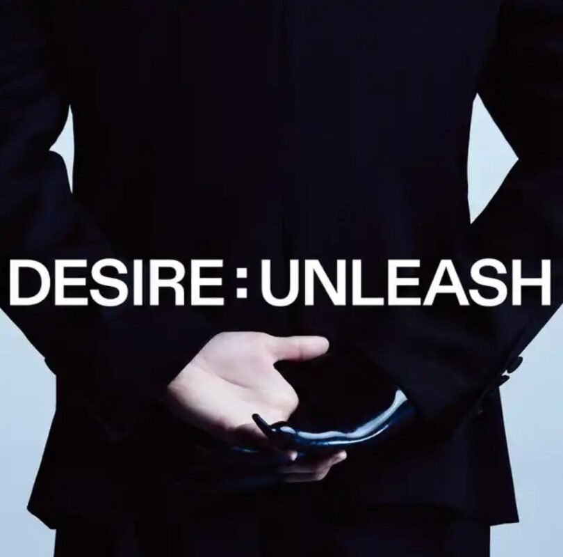
The Desire to Possess.
DESIRE : UNLEASH introduces a darker and more intense exploration of love, shifting from the romantic devotion of ROMANCE : UNTOLD toward the overwhelming desire to possess and remain connected to someone forever. Returning to ENHYPEN's vampire-inspired narrative, the album portrays the conflict between wanting to transform a loved one into an immortal companion and fearing the consequences of that desire.
Through its three visual concepts, MAKE, YOU, and MINE, the album explores different dimensions of longing, temptation, and emotional vulnerability. Its cinematic imagery and dark romantic atmosphere reflect the tension between love and obsession, while its diverse musical styles present desire as a complex emotion capable of inspiring both devotion and destruction.
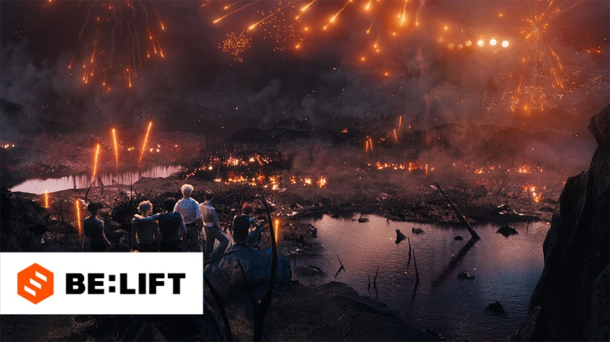
A Love That Defies Heaven and Hell.
Bad Desire (With or Without You) explores the irresistible desire to remain with someone regardless of the consequences. Through its supernatural narrative, the song portrays the temptation to transform a loved one into a vampire, questioning whether eternal togetherness is worth the possibility of causing pain. Its central conflict challenges the boundaries between devotion, selfishness, and forbidden love.
Blending retro-inspired dance-pop rhythms, atmospheric synthesizers, and captivating melodies, the track creates a seductive yet unsettling musical atmosphere. Its music video expands this narrative through surreal landscapes, supernatural imagery, and dramatic visual contrasts, portraying a love powerful enough to challenge fate and transcend the boundaries between heaven and hell.
Performance Stages
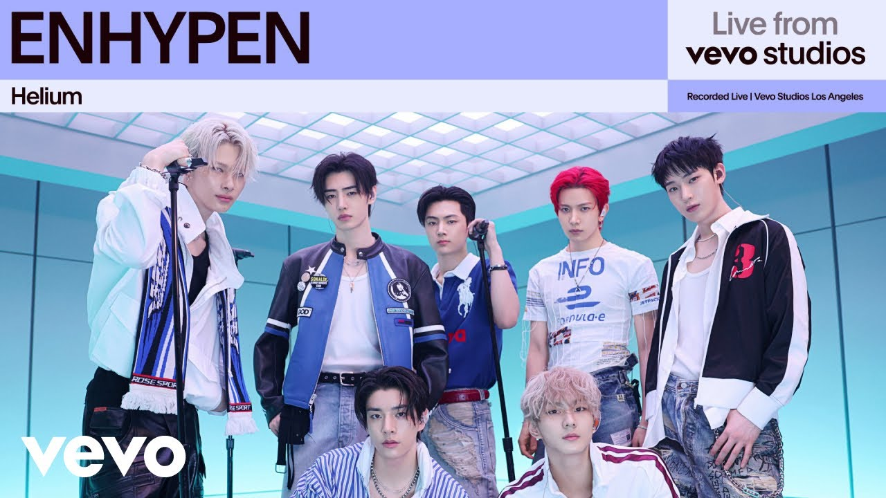
Helium / B-Side Stage
宵 -YOI-
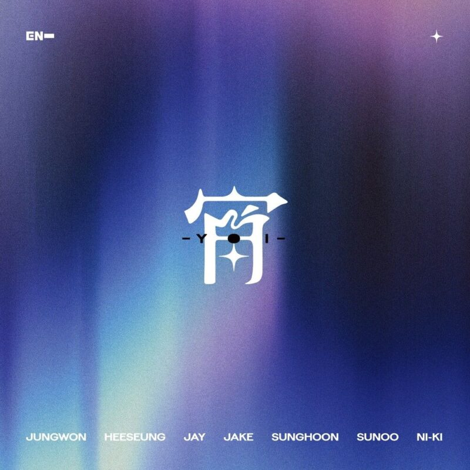
Between Dusk and Desire.
宵 -YOI-, meaning "early evening" or "dusk," marks ENHYPEN's fourth Japanese single, continuing the exploration of love, longing, and desire introduced in DESIRE : UNLEASH. The release captures the emotional intensity of loving someone, portraying affection as a powerful force that moves between gentle devotion and overwhelming possessiveness.
Featuring two original Japanese songs, Shine On Me and Echoes, alongside the Japanese version of Bad Desire (With or Without You), the single presents contrasting expressions of romantic desire. Its atmospheric sound and evocative imagery reflect the fleeting beauty of summer evenings, balancing the warmth of emotional connection with the uncertainty of longing.
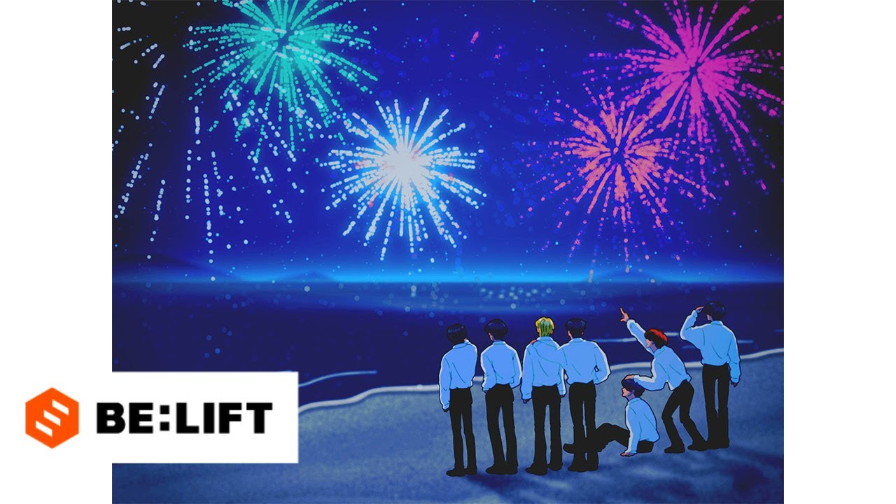
A Light in the Summer Night.
Shine On Me explores the transformative experience of encountering someone who brings light into an otherwise exhausting and uncertain world. Comparing a loved one to a shining star, the song captures the warmth and comfort of discovering a meaningful connection, portraying love as a source of hope during difficult moments.
Through its emotional J-pop ballad arrangement, gentle band instrumentation, and expressive melodies, the track creates a nostalgic atmosphere reminiscent of a summer evening. Selected as the ending theme for the Japanese drama Ebi Datte Tai ga Tsuritai, Shine On Me introduces a softer and more sentimental dimension to ENHYPEN's exploration of romantic devotion.
Performance Stages
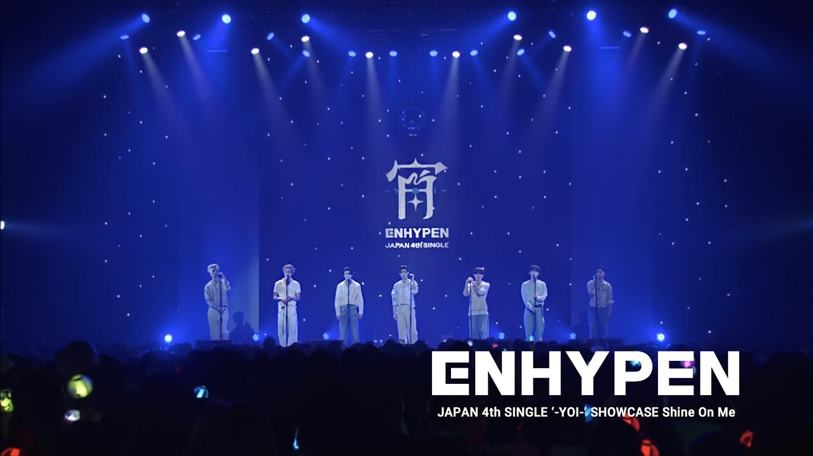
Shine On Me / Showcase Stage
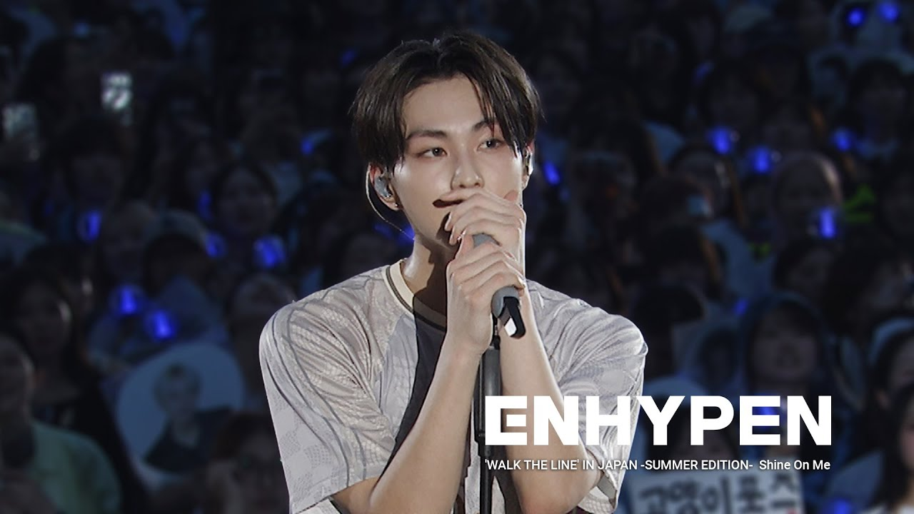
Shine On Me / Concert Stage
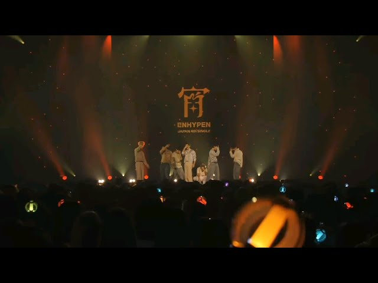
Bad Desire (With Or Without You) Japanese Ver./ Showcase Stage
THE SIN : VANISH
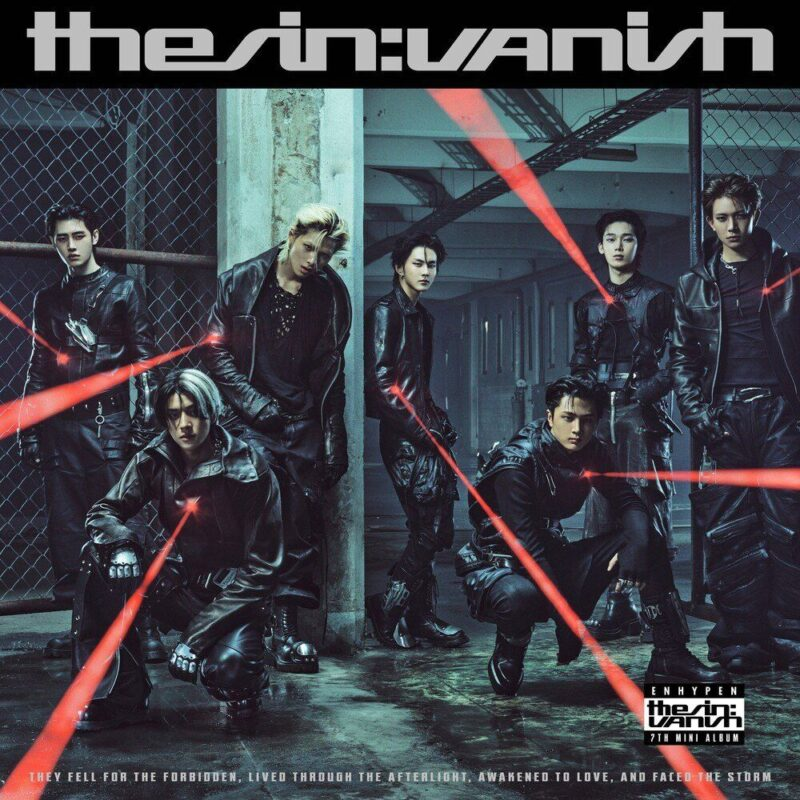
The Sin of Forbidden Love.
THE SIN : VANISH marks the beginning of ENHYPEN's THE SIN series, introducing a new chapter in their vampire-inspired narrative centered on forbidden love, rebellion, and escape. Continuing the emotional conflicts explored in DESIRE : UNLEASH, the album follows a vampire who defies the laws of vampire society and chooses to flee with a human lover, confronting the consequences of a relationship that challenges the boundaries between two worlds.
Presented as a fictional investigative broadcast, the album unfolds through interconnected songs, narration, and dramatic storytelling, transforming the listening experience into a cinematic mystery. Its atmosphere of suspense, danger, and emotional vulnerability captures the tension between love and societal restrictions, exploring the sacrifices individuals are willing to make to protect a connection that the world refuses to accept.
Love on the Run.
Knife explores the determination of two lovers who refuse to surrender despite being pursued for breaking the rules of vampire society. Rather than allowing fear to dictate their choices, the song expresses a rebellious confidence in confronting danger, portraying escape as both an act of survival and a declaration of devotion.
Driven by powerful trap beats, sharp synthesizers, and an aggressive hip-hop sound, the track creates an atmosphere of urgency and confrontation. Its bold musical direction reinforces the tension of the fugitives' journey, presenting a more contemporary interpretation of ENHYPEN's vampire identity while emphasizing the thrill and uncertainty of challenging an established order.
Performance Stages
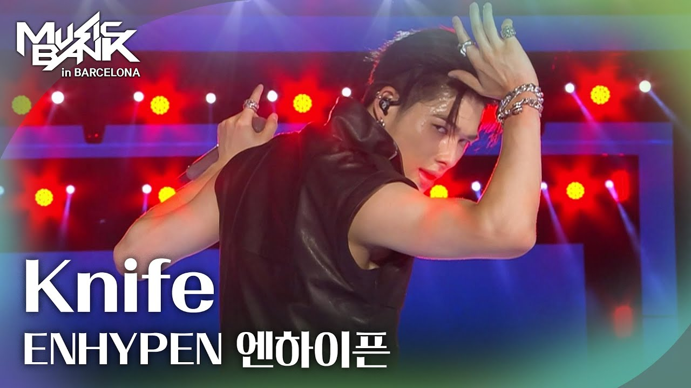
Knife / Title Stage
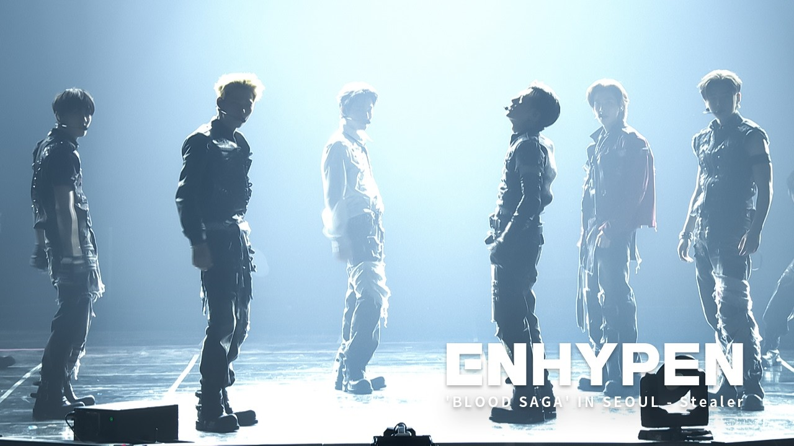
Stealer / B-Side Concert Stage
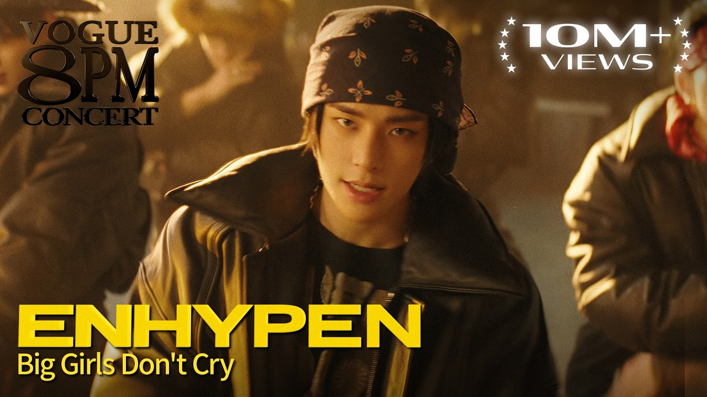
Big Girls Don't Cry / B-Side Stage
THE SIN : BLISS
Finding Paradise in the Chaos.
THE SIN : BLISS continues the forbidden romance introduced in THE SIN : VANISH, exploring the consequences of choosing love over the laws of vampire society. Having escaped together, the vampire and human lovers find themselves facing renewed danger and uncertainty. Yet through their struggles, they begin to realize that true happiness does not depend on reaching a perfect ending, but on the simple experience of remaining together.
Presented as a cinematic concept album, THE SIN : BLISS unfolds through interconnected songs and narrative interludes that follow the lovers' journey toward an uncertain fate. Contrasting moments of tenderness with escalating conflict, the album transforms the fear and desperation of its predecessor into a celebration of devotion. Its central message presents love as a paradoxical blessing, capable of bringing happiness even in the presence of danger and inevitable loss.
A Paradise Painted in Blood.
Bloody Paradise explores the exhilarating sense of freedom experienced by two lovers who remain devoted to one another despite approaching danger. As they prepare for a final confrontation with the forces pursuing them, the song contrasts the violence of their circumstances with the emotional peace they find in each other's presence. Rather than surrendering to fear, they embrace their love as a paradise that exists beyond society's restrictions.
Driven by Brazilian funk influences, energetic percussion, and striking electric guitar textures, the track creates an intense atmosphere of liberation and defiance. Its powerful rhythms and dramatic musical contrasts capture the tension between impending conflict and romantic devotion, presenting a darker yet triumphant interpretation of ENHYPEN's supernatural storytelling.
Performance Stages
Beyond the Eras.
From crossing the first border to confronting desire, destiny, and forbidden love, ENHYPEN's discography traces an evolving narrative of identity, transformation, and connection. Each release introduces a new perspective while carrying forward the themes and symbols that connect their music into a larger story.
Yet the journey extends beyond the albums themselves. Through the SIN PARALLEL universe, familiar narratives take on new possibilities, revealing how different choices and realities can reshape the same story. As ENHYPEN continues to explore new worlds, each era becomes both a reflection of what came before and the beginning of something still untold.